For  integrable on
integrable on
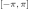
, the Fourier coefficients are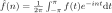
,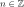
, and the partial sums are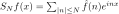
. The system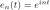
is orthonormal in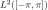
for the inner product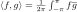
.
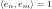
if and
and  otherwise; and
otherwise; and
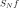
is the orthogonal projection of onto the span of
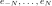
, so it minimises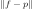
over trigonometric polynomials of degree at most
of degree at most
 .
.
For
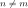
,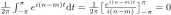
by periodicity, and for the integrand is  . The
coefficients
. The
coefficients 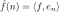
are those of the orthogonal projection onto the span, which is the nearest point of that subspace.Let
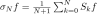
be the Cesaro means. Then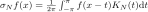
with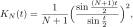
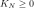
,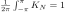
, and for every ,
, 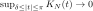
.
Substituting the definition of  and exchanging the finite sum
with the integral,
and exchanging the finite sum
with the integral,
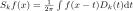
with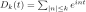
, a geometric sum equal to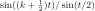
. Averaging over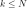
and summing the resulting trigonometric identity gives the displayed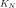
, which is manifestly non-negative.
Its integral is because each
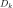
integrates to , only
the constant term surviving. For
, only
the constant term surviving. For 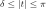
the denominator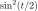
is bounded below by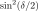
, so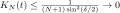
, uniformly.
If is continuous and -periodic, then
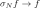
uniformly on .
.
Using
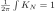
,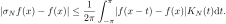
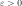
. By uniform continuity of – it is continuous and
periodic, hence uniformly continuous – choose with
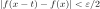
for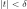
, uniformly in . Split the integral: the part over is at most
. Split the integral: the part over is at most
 since has total mass , and the part over
is at most
since has total mass , and the part over
is at most
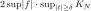
, which is below for large, independently of .
The system
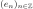
is an orthonormal basis of : for every in that space,
in  and
and
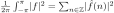
.
By the abstract theorem on orthonormal systems it suffices that the
span of the – the trigonometric polynomials – be dense in
. Continuous periodic functions are dense in : a
square-integrable function is approximated in norm by simple functions,
each of which is approximated by continuous ones. And a continuous
periodic is approximated uniformly, hence in , by the
trigonometric polynomials
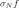
by Fejer's theorem. Density follows, and with it the expansion and Parseval's identity.Fejer's theorem is stronger than it looks precisely because it averages: the partial sums themselves need not converge at a point even for a continuous function, and there is a continuous function whose Fourier series diverges somewhere. Averaging repairs this, and the same trick – replace a kernel by a non-negative one of unit mass concentrating at the origin – is the standard device of approximate identities throughout harmonic analysis.